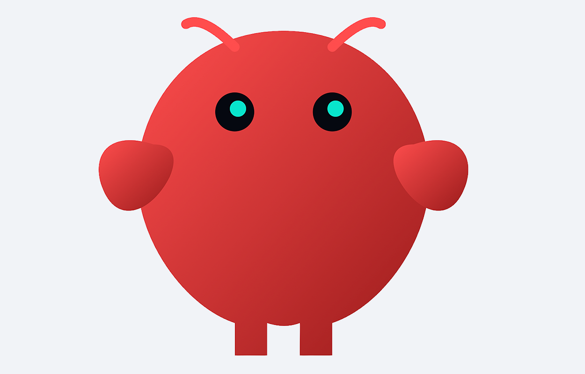

Here are some projects I've recently worked on, and why:
Minecraft server hosted on an AWS EC2 Spot Instance, controlled via a Telegram bot communicating with an AWS Lambda function. The main goal was to get hands-on experience with EC2 resources and achieve maximum performance at minimal cost.
Real-time multiplayer Tic-Tac-Toe built with Next.js and an AWS backend (API Gateway WebSockets, Lambda, DynamoDB). The primary goal was to gain in-depth, hands-on experience with AWS serverless resources to build technical know-how.

Setup of an AI agent (using Openclaw) capable of communicating within a Discord server and via a Telegram bot to execute automations and on-demand operations. The main goal was to find a provider offering a suitable, free AI model with generous usage limits.